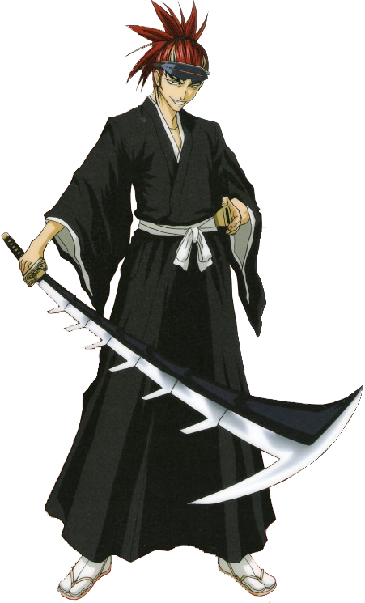

Ренджи Абарай — лейтенант шестого отряда Готея 13. Его капитан — Бьякуя Кучики. Ранее он служил шестым офицером 11-го отряда под командованием Кенпачи Зараки. Позже он женится на Рукии Кучики, так же у них есть дочь Ичика.
Внешность
Ренджи имеет карие глаза и длинные малиновые волосы, которые обычно собраны в высокий хвост. В детстве линия волос Ренджи была ровной. Позже он стилизировал её в виде мыса вдовы. Его верхняя часть тела покрыта этническими татуировками, которые со временем увеличивались, начиная с его ранних студенческих дней в академии, покрывающие всю его спину, большую часть груди, конечности и даже большую часть лба. Он носит стандартное снаряжение синигами, хотя оно обычно включает в себя какие-то головные уборы, обычно дорогие очки или белое оголовье, когда он экономит деньги, чтобы купить новые очки. Несмотря на то, что имеет соответствующий ранг, Ренджи не носит значок лейтенанта отряда.
Характер
Ренджи довольно динамичен. Его личность колеблется от самодовольного и дерзкого до беспокойного и депрессивного после серьёзного поражения, но он демонстрирует себя как невероятно серьёзный и решительный боец, столкнувшись с реальной угрозой. Желая сражаться, убивать и умереть за то, во что он верит, Ренджи опасен для тех, кто стоит на его пути. Ясутора Садо сравнивает его боевой стиль с Ичиго Куросаки. Ренджи преисполнен решимости превзойти своего капитана Бьякую Кучики, и именно это решение заставляет Ренджи становиться сильнее. Ренджи любит тайяки, и не любит пикантную пищу. Ренджи также нравится футзал, и в свободное время он более-менее успешно работает над сборкой команды из 6-го отряда. Нынешние члены — это он сам, Рикичи, и 4, 8, 13 и 20-й офицеры.